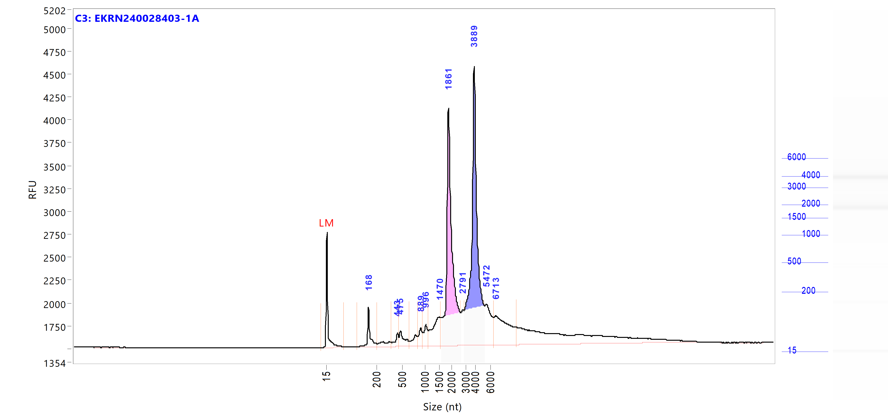
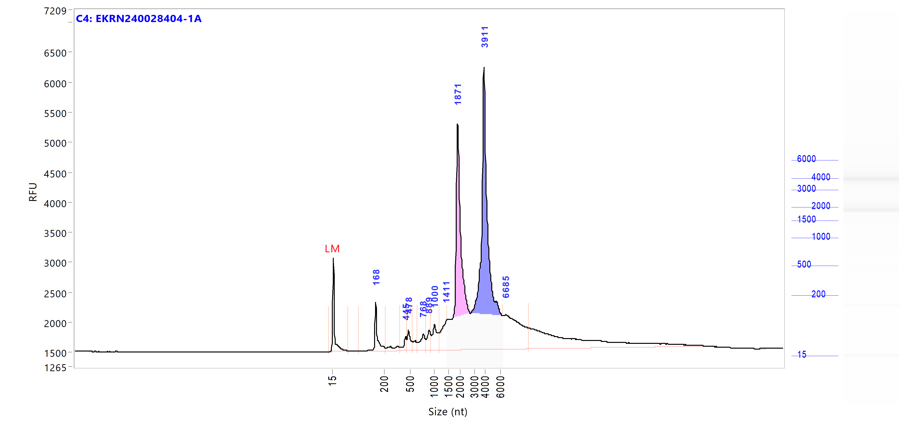
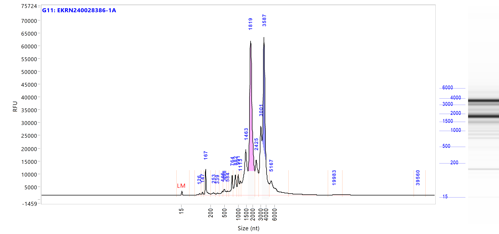
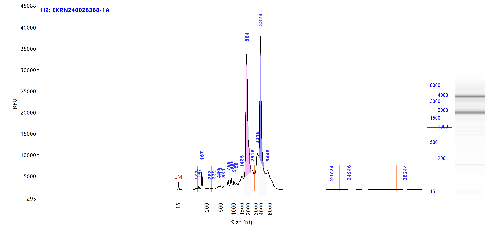
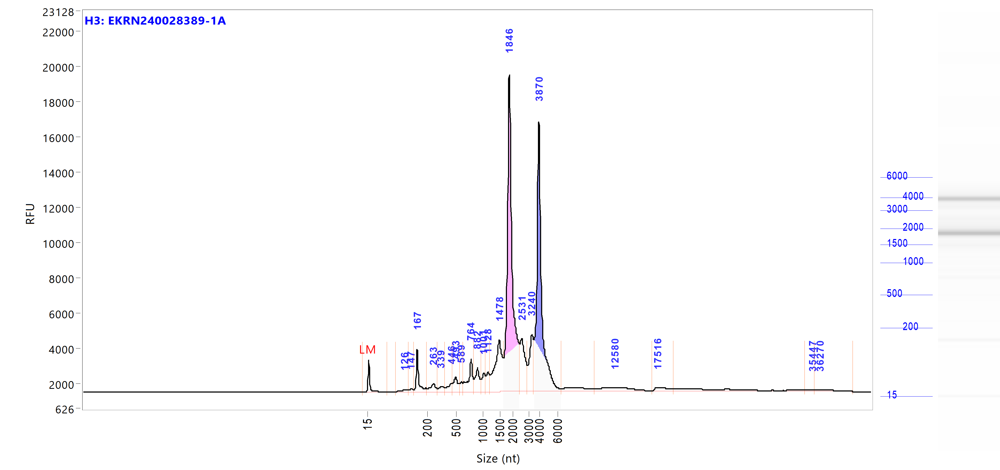
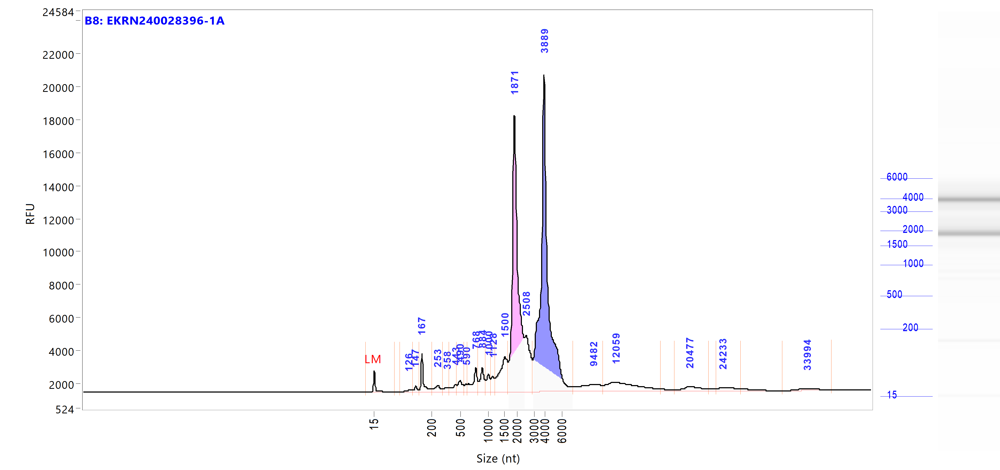
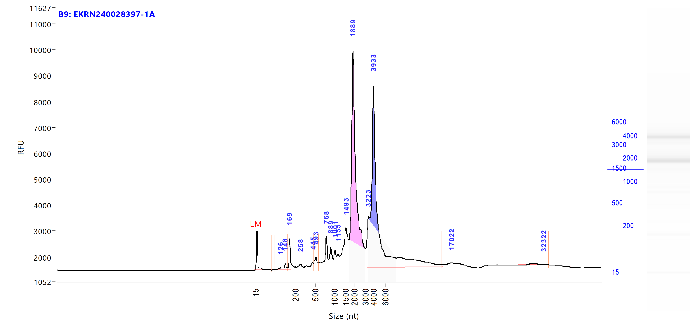
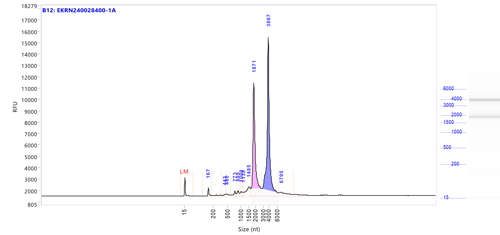
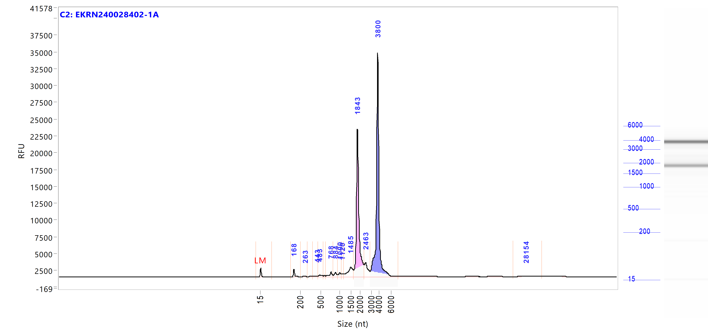

HOLOFISHCOLOUR — Transcriptomic Analysis
![]()
1 Introduction
Pigmentation disorders represent one of the major biological and economic constraints in flatfish aquaculture. In turbot (Scophthalmus maximus), these abnormalities mainly manifest as pseudo-albinism on the ocular side and hypermelanosis on the blind side, leading to a substantial reduction in market value and production efficiency. Such defects originate during early development, particularly around metamorphosis, when asymmetric body patterning and pigmentation are established, and are thought to result from complex interactions between genetic background and environmental factors such as nutrition, light regime, and rearing conditions (Matsumoto1990?; Hamre2013?; Yúfera 2018).
Despite decades of research, the molecular mechanisms underlying pigmentation disorders in flatfish remain only partially understood. Previous studies have implicated key biological processes including melanocyte differentiation, neural crest cell migration, retinoid and thyroid hormone signaling, and calcium homeostasis as central drivers of pigment cell development and maintenance (Seikai and Matsumoto 1994; Taguchi2008?; Yao et al. 2022). However, much of the available evidence is based on candidate-gene approaches or interspecific comparisons, and comprehensive transcriptome-wide analyses in turbot are still limited.
High-throughput RNA sequencing (RNA-seq) provides a powerful, unbiased approach to investigate complex phenotypes by enabling genome-wide quantification of gene expression. In pigmentation research, transcriptomic studies have successfully identified differentially expressed genes and regulatory pathways associated with melanogenesis, chromatophore development, and pigment cell survival in several flatfish and teleost species (Liu et al. 2016; Li et al. 2021). These approaches are particularly well suited to disentangle the polygenic architecture of pigmentation disorders, which are unlikely to be explained by single major-effect loci alone.
Within the HOLOFISHCOLOUR project, transcriptomic characterization constitutes a key component for linking genomic variation to functional biological mechanisms. By comparing gene expression profiles between normally pigmented and malpigmented turbot across biologically relevant tissues, this task aims to identify molecular signatures associated with pigmentation anomalies and to complement ongoing genomic, histological, and microbiome analyses. Together, these integrative results will contribute to a holistic, multi-omics understanding of pigmentation disorders in turbot aquaculture.
2 Objectives
El objetivo principal de esta tarea fue realizar un perfil transcriptómico global de la piel de rodaballos (Scophthalmus maximus) con fenotipo pigmentario normal como malpigmentado, para realizar:
- Caracterización global de los patrones de expresión génica asociados a los fenotipos de pigmentación.
- Identificar los genes diferencialmente expresados entre individuos bien pigmentados y mal pigmentados.
- Explorar los mecanismos y rutas metabólicas potencialmente involucradas las malformaciones pigmentarias en rodaballo.
RNA isolation and quality

Figure 1. Skin sampling for transcriptomic analysis. A–B: Sampling areas in pseudo-albino and normally pigmented turbot. Areas outlined with yellow dashed lines correspond to non-pigmented skin, whereas areas outlined in red correspond to pigmented skin. C: Skin incision and sample collection. RNA library construction and high-throughput sequencing.
Bioinformatic processing and differential expression analysis.
3 Materials and Methods
3.1 Experimental design and Sampling
3.2 Fishes
Three individuals per phenotype (normal vs malpigmented) were selected from tanks E6 and E8, where pigmentation differences were most pronounced.
- Tank E6: offspring from two different parental pairs.
- Tank E8: half-sib family (shared mother, two different fathers).
From each individual, skin and intestine samples were collected.
3.2.1 Sample Types and Pigmentation Categories
- Normally pigmented fish:
- Pigmented skin (dark) on the ocular side
- Non-pigmented skin (light) on the blind side
- Malpigmented fish:
- Pigmented and non-pigmented skin on both ocular and blind sides
3.2.2 Sample Overview
Table 1. Samples selected for transcriptomic analysis
| Sample ID | Tissue | Tank | Individual No. | Pigmentation phenotype | Surface | Pigmentation |
|---|---|---|---|---|---|---|
| P31 | Skin | E6 | 46 | Normal | Ocular | Dark |
| P32 | Skin | E6 | 46 | Normal | Blind | Light |
| P33 | Skin | E8 | 52 | Normal | Ocular | Dark |
| P34 | Skin | E8 | 52 | Normal | Blind | Light |
| P35 | Skin | E8 | 70 | Normal | Ocular | Dark |
| P36 | Skin | E8 | 70 | Normal | Blind | Light |
| P41 | Skin | E8 | 142 | Malpigmented | Ocular | Dark |
| P42 | Skin | E8 | 142 | Malpigmented | Ocular | Light |
| P43 | Skin | E8 | 142 | Malpigmented | Blind | Dark |
| P44 | Skin | E8 | 131 | Malpigmented | Blind | Light |
| P45 | Skin | E6 | 130 | Malpigmented | Ocular | Dark |
| P46 | Skin | E6 | 130 | Malpigmented | Ocular | Light |
| P47 | Skin | E6 | 130 | Malpigmented | Blind | Dark |
| P48 | Skin | E6 | 130 | Malpigmented | Blind | Light |
| P49 | Skin | E6 | 26 | Malpigmented | Ocular | Dark |
| P50 | Skin | E6 | 26 | Malpigmented | Ocular | Light |
| P51 | Skin | E6 | 26 | Malpigmented | Blind | Dark |
| P52 | Skin | E6 | 26 | Malpigmented | Blind | Light |
| P1G | Skin | — | 56 | Normal | — | — |
| P2G | Skin | — | 34 | Normal | — | — |
| PNKD | Skin | — | — | Ambicolor | — | — |
| PNKV | Skin | — | — | Ambicolor | — | — |
| IT1G | Intestine | — | — | — | — | — |
| ITPNK | Intestine | — | — | — | — | — |
3.3 Sample Collection
3.3.1 Skin Sampling
Fish were maintained at −80 °C and placed on ice prior to sampling to prevent rapid thawing. While still frozen, approximately 20 mg of skin tissue were excised using sterile dissection tools.
Muscle tissue was carefully removed by gentle scraping to avoid contamination.
3.3.2 3.2 Intestinal Sampling
Intestinal samples were obtained by ventral dissection. The visceral mass was removed, and intestinal contents were gently expelled before collecting the posterior intestine segment.
Figure 2. Intestinal sampling procedure.
3.4 4. RNA Extraction and Quality Assessment
3.4.1 4.1 RNA Isolation
Total RNA was extracted using a TRIzol™ + Phasemaker™ Tubes protocol, followed by purification with the RNeasy Mini Kit (Qiagen).
RNA concentration was measured using NanoDrop™ One, and integrity was assessed by 1.5% agarose gel electrophoresis.
| Sample | DNA concentration (ng/µl) | A260/A280 | A260/A230 |
|---|---|---|---|
| P31 | 1142.7 | 2.14 | 2.10 |
| P32 | 813.4 | 2.14 | 2.18 |
| IT11 | 534.3 | 2.13 | 2.00 |
| P33 | 338.9 | 2.12 | 2.24 |
| P34 | 440.5 | 2.10 | 2.27 |
| IT12 | 974.0 | 2.13 | 2.36 |
| P35 | 299.3 | 2.12 | 1.08 |
| P36 | 308.8 | 2.13 | 2.18 |
| IT13 | 367.6 | 2.13 | 1.99 |
| P37 | 191.5 | 2.10 | 2.20 |
| P38 | 209.5 | 2.14 | 2.05 |
| P39 | 827.3 | 2.15 | 2.31 |
| P40 | 359.5 | 2.14 | 2.17 |
| IT14 | 822.9 | 2.14 | 2.31 |
| P41 | 583.6 | 2.10 | 2.29 |
| P42 | 506.5 | 2.10 | 2.15 |
| P43 | 588.0 | 2.10 | 2.33 |
| P44 | 1028.3 | 2.13 | 2.14 |
| IT15 | 727.2 | 2.10 | 2.29 |

3.4.2 RNA Extraction Quality Metrics
Table 2. RNA concentration and purity metrics
| Sample | Concentration (ng/µl) | A260/A280 | A260/A230 |
|---|---|---|---|
| P31 | 1142.7 | 2.14 | 2.10 |
| P32 | 813.4 | 2.14 | 2.18 |
| P33 | 338.9 | 2.12 | 2.24 |
| P34 | 440.5 | 2.10 | 2.27 |
| P35 | 299.3 | 2.12 | 1.08 |
| P36 | 308.8 | 2.13 | 2.18 |
3.5 RNA-Seq Library Preparation and Sequencing
Transcriptome sequencing (RNA-Seq) was performed through the Plant and Animal Whole Genome Sequencing (WOBI) service (Table 1), outsourced to Novogene (quotation NVUK2024021911). Messenger RNA (mRNA) libraries were constructed using a strand-specific protocol, preserving transcript orientation information and enabling accurate downstream expression analyses.
Library preparation was based on poly(A) enrichment to selectively capture mature mRNA transcripts. Sequencing was carried out on an Illumina NovaSeq X Plus platform using a paired-end strategy with a read length of 150 base pairs (2 × 150 bp, PE150).
Sequencing quality criteria were defined to ensure high data reliability, with at least 85% of bases achieving a Phred quality score ≥ Q30. A minimum sequencing output of 6 Gb per sample was guaranteed, providing sufficient depth and coverage for subsequent differential gene expression analyses. In total, 50 RNA-Seq libraries were successfully sequenced.
| Parameter | Description |
|---|---|
| Sequencing platform | Illumina NovaSeq X Plus |
| Read configuration | Paired-end (2 × 150 bp) |
| Library preparation | Strand-specific mRNA (poly(A) enrichment) |
| Quality threshold | ≥ 85% of bases with Q score ≥ 30 |
| Data output | ≥ 6 Gb per sample |
| Number of libraries | 50 |
3.6 RNA Quality Control
RNA quality assessment was performed as a mandatory quality control step prior to RNA-Seq library preparation and sequencing. RNA concentration, integrity, and purity metrics were evaluated by Novogene using the Agilent 5400 Bioanalyzer, following standard procedures for transcriptomic applications.
The complete quality control results for all submitted samples are summarized in Table 2, including RNA concentration, total RNA amount, RNA Integrity Number (RIN), and final QC status. Representative electropherograms generated during the analysis are shown in Figure 1.
The RNA Integrity Number (RIN) is a numerical score ranging from 1 (fully degraded RNA) to 10 (intact RNA), widely used to assess total RNA quality. RIN values are computed from automated electrophoretic analyses performed on platforms such as the Agilent Bioanalyzer.
The RIN algorithm evaluates multiple features of the electropherogram, including:
- The presence, height, and sharpness of ribosomal RNA peaks (primarily 18S and 28S rRNA in eukaryotes). High-quality RNA typically displays well-defined 18S and 28S peaks with an approximate 2:1 intensity ratio.
- Background signal and degree of fragmentation. Degraded RNA is characterized by reduced or absent ribosomal peaks and increased signal corresponding to low-molecular-weight fragments.
- Overall signal distribution across fragment sizes, reflecting progressive RNA degradation.
In high-quality samples, electropherograms show sharp and well-resolved rRNA peaks with low background noise. In contrast, degraded samples exhibit flattened or missing rRNA peaks and a pronounced accumulation of short RNA fragments.
Most samples exhibited RIN values between 7.0 and 9.8, which are generally considered suitable for RNA-Seq library construction and downstream differential gene expression analyses. RNA concentrations also fell within acceptable ranges for library preparation, although moderate variability among samples was observed.
Two samples deviated from the expected quality standards:
- IT12 showed a low RIN value (3.8), indicating substantial RNA degradation. This sample was classified as Fail and deemed unsuitable for RNA-Seq.
- IT16 displayed an intermediate RIN value of 6.0, suggesting partial degradation that could compromise sequencing quality and data interpretation.
Additionally, ITPNK exhibited slight genomic DNA contamination, as indicated in the Novogene QC report. Despite this observation, the sample passed overall QC criteria.
Given that the sequencing budget covered 24 RNA-Seq libraries and 26 samples were initially submitted, samples IT12 and IT16 were excluded from sequencing. The remaining samples met the quality requirements for transcriptomic analysis and were retained for RNA-Seq library preparation and sequencing.
| No. | Sample | Concentration (ng/µl) | Volume (µl) | Total amount (µg) | RIN | Sample QC Results |
|---|---|---|---|---|---|---|
| 1 | P31 | 1851.34 | 16 | 29.62141 | 7.7 | Pass |
| 2 | P32 | 2022.42 | 16 | 32.35878 | 8.3 | Pass |
| 3 | P33 | 483.84 | 13 | 6.28990 | 8.8 | Pass |
| 4 | P34 | 826.81 | 17 | 14.05583 | 8.8 | Pass |
| 5 | P35 | 430.00 | 16 | 6.87994 | 8.2 | Pass |
| 6 | P36 | 447.89 | 16 | 7.16622 | 7.2 | Pass |
| 7 | P41 | 1270.12 | 16 | 20.32186 | 9.3 | Pass |
| 8 | P42 | 888.98 | 19 | 16.89067 | 8.8 | Pass |
| 9 | P43 | 1343.73 | 19 | 25.53087 | 8.0 | Pass |
| 10 | P44 | 1961.08 | 18 | 35.29941 | 7.8 | Pass |
| 11 | P45 | 709.86 | 18 | 12.77749 | 8.1 | Pass |
| 12 | P46 | 768.56 | 18 | 13.83416 | 8.9 | Pass |
| 13 | P47 | 342.27 | 19 | 6.50313 | 8.5 | Pass |
| 14 | P48 | 404.26 | 17 | 6.87242 | 7.8 | Pass |
| 15 | P49 | 954.50 | 16 | 15.27201 | 8.8 | Pass |
| 16 | P50 | 295.43 | 16 | 4.72680 | 9.6 | Pass |
| 17 | P51 | 2511.00 | 13 | 32.64302 | 9.5 | Pass |
| 18 | P52 | 578.87 | 15 | 8.68312 | 9.8 | Pass |
| 19 | P1G | 150.06 | 16 | 2.40097 | 8.9 | Pass |
| 20 | P2G | 192.33 | 16 | 3.07729 | 9.0 | Pass |
| 21 | PNKD | 417.18 | 18 | 7.50923 | 8.7 | Pass |
| 22 | PNKV | 221.19 | 17 | 3.76027 | 8.4 | Pass |
| 23 | IT12 | 2422.80 | 17 | 41.18753 | 3.8 | Fail |
| 24 | IT16 | 2988.15 | 18 | 53.78664 | 6.0 | Pass |
| 25 | IT1G | 2842.68 | 16 | 45.48292 | 7.8 | Pass |
| 26 | ITPNK | 4493.36 | 18 | 80.88050 | 7.1 | Pass |


















Figure: RNA quality control electropherograms generated using the Agilent 5400 Bioanalyzer. Each tab corresponds to one sample and displays the characteristic 18S and 28S rRNA peaks and fragment size distribution used to assess RNA integrity prior to sequencing.
Q1. What is the influence of RNA concentration on library construction?
RNA concentration determines the total RNA input available for library preparation. Insufficient RNA input may result in low library yield or library construction failure. Additional RNA concentration steps may increase degradation risk.
Q2. Does genomic DNA contamination affect poly(A)-enriched mRNA library preparation?
Genomic DNA is not retained during poly(A) enrichment–based mRNA library preparation. Therefore, low-level genomic DNA contamination does not affect downstream library construction when samples pass QC.
Q3. What RNA purification methods are used and how much RNA loss is expected?
RNA purification is typically performed using column-based or magnetic bead–based methods. RNA loss after purification is expected to be approximately 60%, depending on the purification strategy and initial RNA quality.
3.7 Bioinformatic Analysis
3.7.1 Overview
The bioinformatic workflow included:
- Raw read quality control
- Alignment to the reference genome
- Gene-level quantification
- Differential expression analysis
- Functional enrichment analysis

3.8 Reference Genome
RNA-seq analyses were conducted using the Scophthalmus maximus ASM1334776v1 reference genome assembly and its corresponding gene annotation, both obtained from Ensembl (release 113). This assembly provides comprehensive coverage of the turbot genome, including both assembled chromosomes and unplaced contigs and scaffolds.
The reference genome and annotation files are publicly available from Ensembl:
https://www.ensembl.org/Scophthalmus_maximus/Info/Index
3.8.1 Genome statistics
| Feature | Value |
|---|---|
| Assembly | ASM1334776v1 |
| Genome size | 556,696,898 bp |
| Coding genes | 21,263 |
| Non-coding genes | 12,989 |
| Pseudogenes | 201 |
| Gene transcripts | 76,329 |
| Annotation source | Ensembl (v113) |
3.8.2 Genome and annotation files used
For read alignment and transcript quantification, we used the toplevel genome FASTA file (Scophthalmus_maximus.ASM1334776v1.dna.toplevel.fa) and the full Ensembl gene annotation in GTF format (Scophthalmus_maximus.ASM1334776v1.113.gtf). These files were downloaded from the Ensembl FTP server (release 113):
Genome FASTA: https://ftp.ensembl.org/pub/release-113/fasta/scophthalmus_maximus/dna/
Gene annotation (GTF): https://ftp.ensembl.org/pub/release-113/gtf/scophthalmus_maximus/
This combination ensures that RNA-seq reads mapping to both chromosomal and non-chromosomal regions are retained, preventing the loss of annotated genes located in unassembled genomic regions. The GTF format was selected due to its broad compatibility with RNA-seq analysis tools such as STAR, HTSeq, and featureCounts, and its suitability for transcript-level quantification.
Ensembl provides multiple genome sequence and annotation file types, each optimized for different applications. The main file types relevant for RNA-seq analyses are summarized below.
Genome FASTA files
*.dna.toplevel.fa✅ (used in this study)
Includes all assembled chromosomes as well as unplaced contigs and scaffolds. This is the most comprehensive genome representation and ensures that RNA-seq reads mapping to non-chromosomal regions are not lost.*.dna.primary_assembly.fa
Contains only primary assembled chromosomes and selected scaffolds, excluding smaller unplaced contigs.*.dna.chromosome.*.fa
Individual FASTA files for each chromosome, mainly useful for region-specific or targeted analyses.*.dna.nonchromosomal.fa
Contains only unplaced contigs and scaffolds and is not suitable for whole-transcriptome RNA-seq analyses.*.dna_sm.toplevel.fa
Equivalent to the toplevel FASTA file but soft-masked (repetitive regions in lowercase). This is not required for standard RNA-seq workflows.
Gene annotation files
GTF (
*.gtf) ✅ (used in this study)
Compact gene annotation format optimized for RNA-seq analysis pipelines. Fully compatible with tools such as STAR, HTSeq, and featureCounts.GFF3 (
*.gff3)
A more general-purpose annotation format that includes additional genomic features but often requires conversion for RNA-seq applications.Ab initio GTF (
*.abinitio.gtf)
Contains gene predictions generated without experimental evidence and was not used due to lower reliability.
Overall, the combination of the toplevel genome assembly and the full Ensembl GTF annotation provides a robust and comprehensive reference framework for RNA-seq analyses, minimizing mapping bias and ensuring accurate gene expression quantification across the entire turbot genome.
3.9 Notes and Next Steps
This transcriptomic dataset provides a solid foundation for:
- Integrating GWAS candidate genes
- Cross-validating pigmentation pathways
- Comparative analyses with other flatfish species
- Multi-omics integration within the HOLOFISHCOLOUR framework
Further refinement will include: - Differential expression results - GO / KEGG enrichment - Integration with phenotypic pigmentation metrics